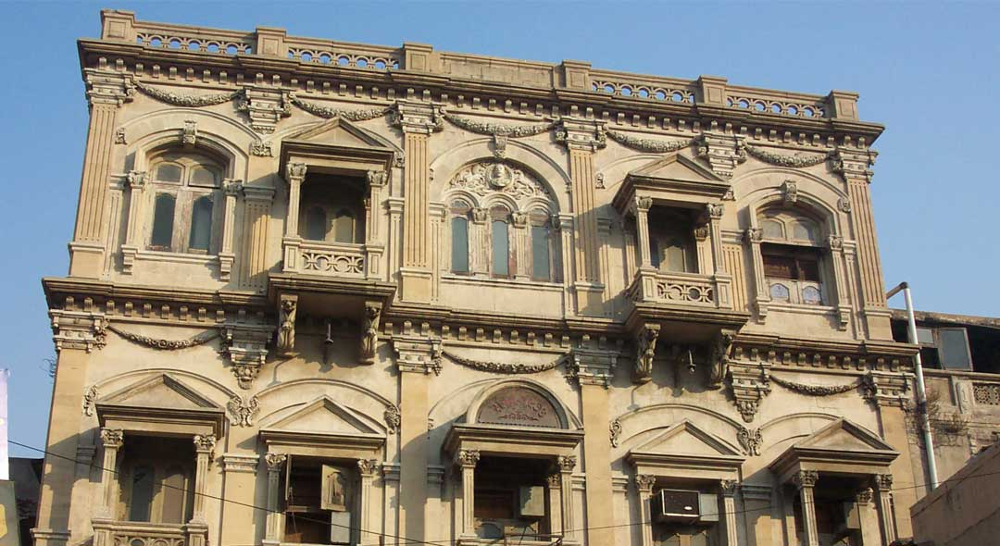
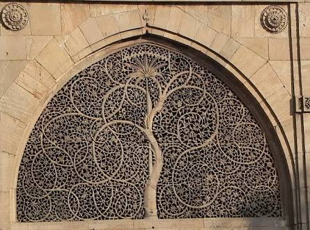

The city of Ahmedabad is endowed with a rich architectural heritage that is vital to the local identity and continuity of the place. Along with the foremost heritage Indo-Islamic monuments of the 15th to 17th centuries, there are potential heritage precincts in the form of the Pols, the traditional residential clusters of the medieval period, which makes Ahmedabad exceptional. Combining these all, the historic walled city of Ahmedabad has it all to be the first city in India to be Inscribed in UNESCO's World Heritage City list of 2017.
|  |
Historic city of AhmedabadSituated in the heart of Gujarat, Ahmedabad has a character like no other, defined by a spirit of enterprise. Although Ahmedabad is a bustling metropoliton with reputed institutes and a rapidly growing economy, it is also deeply rooted in tradition. The city if known for its association with Mahatma Gandhi and in addition to a complex maze of neighbourhood called pols, hosts some of the country’s finest medieval Islamic Architecture. The city of Ahmedabad was formerly known as Ashawal of Asha Bhil; Karnavati of Karanadev, Ahamdabad of Sultan Ahmed Shah, Rajnagar, the capital of Jainism, a politico-cultural city of Mahatma Gandhi and Sardar Patel and Amdavad of 'Amdavadis'. The Britishers spelled it as Ahmedabad and it became internationally known as Ahmedabad. But in vernacular language, it became popular as Amdavad and all the Gujaratis know it as Amdavadis. The citizens are known as Amdavadis across the world. There are hundreds of temples, mosques and other pilgrim spots in the city. Among all, one spot glaringly draws our attention, which is none other than Sabarmati Ashram, offered to the nation by Gandhiji, his humble residence known as Hridaykunj. The period in which he lived here is Known as the Gandhi-Era. The seeds of prosperity of the city were sown by Sheth Ranchhodlal Chhotalal by establishing the first textile mill in the city. As a result, the city became an industrial town and the machine-age began in Ahmedabad. Once known as Manchester of India, today Ahmedabad is famous as the biggest industrial capital of Gujarat. The Mahajan tradition, started by a sheriff, Sheth Shantidas Zaveri, was preserved and continued by another leading industrialist Sheth Kasturbhai Lalbhai. Sheth Kasturbhai and many others have contributed substantially in making the city prosperous. Sahajanand Swami established Swaminarayan temple in Kalupur, located at the heart of the city. The artistic wood work of the temple is famous globally. The kite loving people of the city celebrate Navratri festival joyfully and with great fervor. Rathyatra, the chariot procession of Jagannath temple, is again the pride of the city. The musical programmes arranged under the auspices of 'Saptak' for the last twenty seven years are enjoyed by the music lovers of the entire country. The assistant judge during British period, Mr. Alexander Kinlock Forbes was deeply interested in the architecture and folklore of the city. He also learnt Gujarati from our great Gujarati poet-Dalpatram. In comparison with other cities, the number of museums in Ahmedabad is larger. The most famous among them are Calico Textile Museum, Vechaar-Utensils Museum, City Museum and L.D.Museum of lndology. The academic institutions like Indian Institute of Management, National Institute of Design, Physical Research Laboratory, CEPT and Nirma University have made the city known as an educational hub in the country. |
|  |
| Major Attractions | Stepwells | History | Timeline | Gates of Ahmedabad | Pols | Religious Places | Videos |